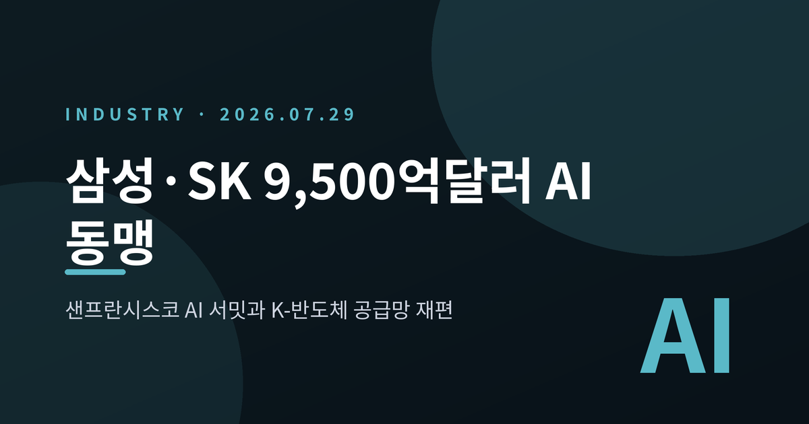
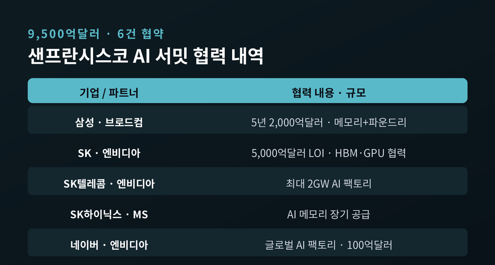
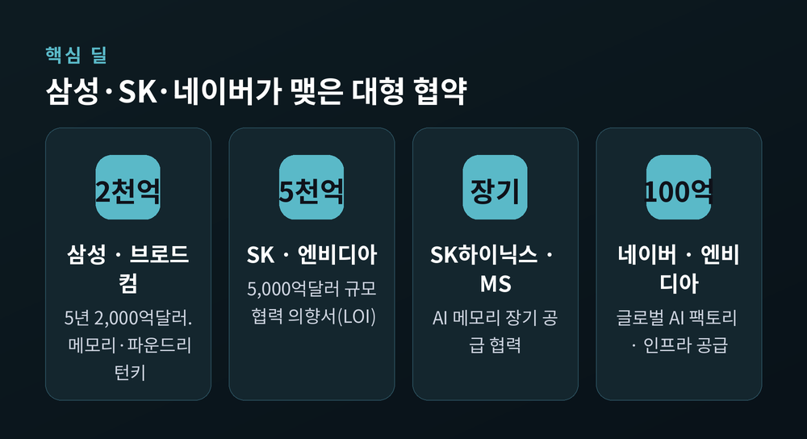
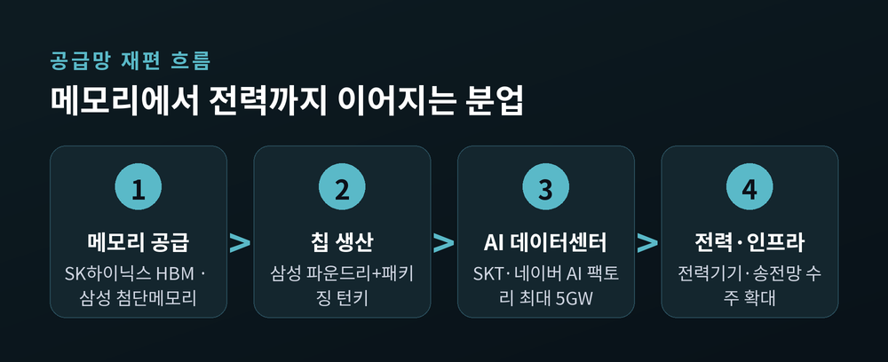
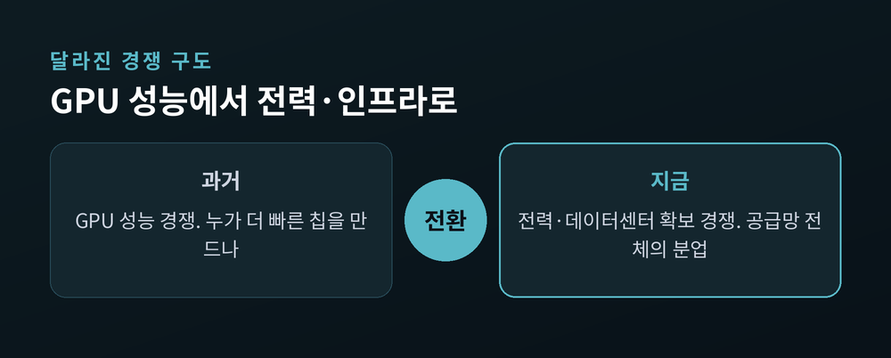

삼성·SK 9,500억 달러 AI 동맹 총정리
— 샌프란시스코 AI 서밋과 K-반도체 공급망 재편
이번 글에서는 2026년 7월 샌프란시스코 AI 서밋에서 나온 9,500억 달러 규모의 한·미 AI 동맹을 정리해 보겠습니다. 숫자가 워낙 크다 보니 흘려듣기 쉽습니다만, 핵심은 금액이 아니라 '한국 반도체가 글로벌 AI 공급망에서 어떤 자리를 맡게 되었는가'입니다. 무슨 일이 있었는지부터 차근차근 짚겠습니다.

한 줄 요약: 9,500억 달러, 그리고 6건의 협약
2026년 7월 24일(현지시간), 미국 샌프란시스코에서 'AI 서밋'이 열렸습니다. 이 자리에서 한국 기업과 글로벌 빅테크 사이에 모두 6건의 협약이 맺어졌습니다. 반도체 공급·생산 분야의 협력 규모만 총 9,500억 달러, 우리 돈으로 약 1,375조 원에 이릅니다.
여기에 국내 AI 데이터센터를 최대 5기가와트(GW)까지 함께 짓는 협력도 더해졌습니다. 행사에는 이재용 삼성전자 회장과 최태원 SK 회장, 정의선 현대차그룹 회장, 이해진 네이버 의장이 참석했습니다. 반대편에는 젠슨 황 엔비디아 CEO, 혹 탄 브로드컴 CEO, 샘 올트먼 오픈AI CEO, 다리오 아모데이 앤트로픽 CEO가 앉았습니다.
과학기술정보통신부가 자리를 마련했고, 이재명 대통령이 직접 참석해 힘을 실었습니다. 한 나라의 대표 기업들과 세계 최상위 빅테크가 한자리에서 협약을 쏟아낸 것은 흔한 장면이 아닙니다. 언론이 이를 두고 '샌프란 AI 선언'이라 부른 이유입니다.
먼저 협약의 전체 그림을 표로 정리하면 이렇습니다.

삼성전자 — 브로드컴과 5년 2,000억 달러
삼성전자는 브로드컴과 손을 잡았습니다. 2026년부터 2030년까지 5년간, 규모는 2,000억 달러 이상입니다. 약 290조 원입니다. 내용은 첨단 메모리 반도체 공급과 AI 칩을 만드는 파운드리(수탁생산) 협력입니다.
주목할 점은 단순한 메모리 납품에 그치지 않는다는 데 있습니다. 메모리를 대고, 칩을 위탁 생산하고, 첨단 패키징까지 한 번에 맡는 '턴키' 방식입니다. 삼성은 메모리·파운드리·패키징을 모두 가진 종합반도체 기업입니다. 이 강점을 그대로 무기로 삼은 셈입니다.
파운드리 사업은 그동안 대형 고객 확보가 숙제였습니다. 이번에 브로드컴이라는 큰 손을 얻으며 사업에 힘이 실렸다는 평가가 나옵니다.
경쟁사들이 설계와 생산을 각기 다른 회사에 맡길 때, 삼성은 이를 한 지붕 아래에서 처리합니다. 메모리부터 생산, 후공정까지 묶어 파는 이 '턴키' 구조가 이번 협력의 차별점입니다. 이재용 회장이 서밋을 계기로 샘 올트먼 오픈AI CEO와 따로 만난 점도 눈길을 끌었습니다.
SK그룹 — 빅테크와 5년 7,500억 달러
규모로만 보면 이날의 주인공은 SK그룹입니다. 엔비디아, 마이크로소프트, 앤트로픽과 향후 5년간 총 7,500억 달러, 약 1,100조 원 규모의 AI 인프라 협력을 추진합니다.
핵심은 엔비디아와의 협력입니다. SK는 엔비디아와 5,000억 달러 이상 규모의 포괄적 협력 의향서(LOI)를 맺었습니다. SK하이닉스가 HBM(고대역폭메모리)을 안정적으로 공급하면, 엔비디아는 GPU를 SK의 AI 데이터센터에 최우선으로 판매합니다. 차세대 GPU 시스템인 '베라 루빈'을 우선 배정받는 조건도 담겼습니다.
SK텔레콤은 엔비디아와 최대 2GW 규모의 국내 AI 팩토리를 짓기로 했습니다. SK하이닉스는 마이크로소프트와 메모리 장기 공급 협력도 추진합니다. 마이크로소프트와 앤트로픽을 합친 협력만 2,500억 달러 규모로, 엔비디아 몫을 뺀 나머지 절반을 채웁니다.
최태원 회장은 "엔비디아와 세계 최고의 AI 팩토리를 구축하겠다"고 말했습니다.
메모리 회사가 GPU를 우선 배정받는다는 대목이 특히 중요합니다. HBM을 대주는 대신 최신 GPU를 먼저 확보하는, 서로가 서로에게 필요한 관계가 계약서에 담긴 셈입니다.
핵심 딜을 카드로 다시 정리해 보겠습니다.

왜 중요한가 — 메모리 기업의 역할이 나뉘었다
이번 서밋의 의미는 금액보다 '역할 분담'에 있습니다. 예전의 AI 경쟁은 '누가 더 빠른 GPU를 만드느냐'의 싸움이었습니다. 지금은 메모리와 파운드리, 데이터센터, 전력까지 이어지는 공급망 전체의 분업 구도로 옮겨왔습니다.
역할을 나눠 보면 그림이 선명해집니다. SK하이닉스는 엔비디아와 마이크로소프트에 HBM을 대는 '메모리 공급 축'을 맡았습니다. 삼성전자는 메모리에 파운드리와 패키징까지 묶어 파는 '종합반도체 축'에 섰습니다. SK텔레콤과 네이버는 국내에 AI 데이터센터를 짓고 돌리는 '인프라 축'을 담당합니다.
네이버 역시 엔비디아와 글로벌 AI 팩토리 구축 협약을 맺고, 투자기업 브룩필드와 인프라 공급 계약을 더했습니다. 관련 규모는 100억 달러 수준입니다. 한국을 세계 AI 공급망의 핵심 거점, 곧 'AI 허브'로 세우겠다는 그림이 밑에 깔려 있습니다. 어느 한 회사의 승리가 아니라, 한국 반도체 산업 전체가 역할을 나눠 맡는 구도라는 점이 이번 서밋의 본질입니다.
이 공급망이 어떻게 맞물려 돌아가는지 흐름으로 보겠습니다.

전망 — 경쟁의 무게중심이 전력으로 옮겨간다
이제 남은 질문은 '이 큰 그림이 실제로 굴러갈 수 있느냐'입니다. 전문가들은 AI 경쟁의 무게중심이 GPU 성능에서 전력과 데이터센터 같은 물리적 인프라로 이동하고 있다고 봅니다. 발전소와 송전망, 데이터센터, 반도체를 얼마나 빠르게 확보하느냐가 승부처가 되었습니다.
수혜는 이미 번지고 있습니다. 국내 전력기기 3사의 1분기 누적 수주잔고가 37조 원을 넘어섰습니다. 반도체 한 축이 아니라 전력·인프라 밸류체인 전체가 함께 움직이는 국면입니다. 데이터센터를 지으려면 결국 발전소와 송전망이 뒷받침되어야 하기 때문입니다. 칩의 속도만큼이나 전기를 어디서 얼마나 끌어오느냐가 새로운 병목으로 떠올랐습니다.
물론 아직 완성된 그림은 아닙니다. 이번 협약의 상당수는 MOU와 LOI, 곧 '의향서' 단계입니다. 확정 계약과 실제 집행까지는 시차와 변수가 남아 있습니다. 5GW 규모의 데이터센터를 지으려면 전력과 부지, 인허가부터 풀어야 합니다. 9,500억 달러라는 숫자도 5년치를 여러 항목으로 합친 값이라, 한 해 실적으로 곧장 읽어서는 곤란합니다.
무엇이 달라졌는지 과거와 지금을 나란히 두고 보겠습니다.

정리하면 이렇습니다. 샌프란시스코에서 오간 9,500억 달러는 한국 반도체가 GPU를 파는 나라에서 'AI 공급망을 떠받치는 나라'로 자리를 바꾸는 신호였습니다. 남은 과제는 분명합니다 — 의향서를 계약으로, 계약을 전력과 공장으로 바꿔내는 실행입니다.
숫자가 조 단위로 뛰었다고 해서 결과까지 보장되는 것은 아닙니다. 결국 확인해야 할 것은 하나입니다. 서명 위의 금액이 아니라, 그 금액이 몇 년 뒤 실제로 돌아가는 데이터센터와 공장으로 남는가입니다.